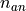

Graph Random Model
The other implemented pipeline used to generate random graphs with anomalies only requires a number of node and number of egdes as input. The generated weighted graphs are created using Erdos Renyi models, with anomalies generated with Erdos Renyi.
Generation
The process is as follows:
Read input parameters:
Generate independently the normal graph
 and the anomaly graph
and the anomaly graph  with Erdos-Renyi models with the specified parameters, and set all weights to
with Erdos-Renyi models with the specified parameters, and set all weights to 
For each node  of
, uniformly pick in a node  that has not already been selected
that has not already been selectedGenerate graph
 as the union of and ; if an edge of is already in , merge them and increase the weight by
as the union of and ; if an edge of is already in , merge them and increase the weight by Randomly pick edges in
and increase their weight by until the total sum of the weights specified as input is reached.